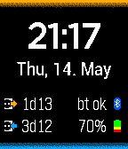

The Watchface
Besides the usual basic watchface features (like time and date)
the Bluetooth status and battery percentage is shown. But the most
important feature is the two times shown on the left: the time since
fully charged and the estimated time to an empty Pebble.
The color scheme reflects Pebble Time's timeline colors for past and
future events.
The Time Since Full

The icon with the arrow pointing away from the wall plug
symbolizes the unplugging of the Pebble. The time is only reset
when the Pebble is plugged in and fully charged, I recommend
charging the Pebble overnight if possible.
If the Pebble was not fully charged when since the watchface was
installed "-" is shown instead of the time when the watch is
disconnected.
When the watch is plugged in either "c & p" when still charging
and "plugged" when finished with charging is shown.
Battery Estimate
The estimate is based on an algorithm that takes into account
several of the last discharge steps (percentage drops) and also
takes into account certain idiosyncracies of the Pebble
hardware.
Initially (when the watchface is newly installed) a battery
lifetime of 5 days per charge is assumed and is refined over the
time the watchface is used.
The precision of this estimate is only assured when the watchface
is used continually.